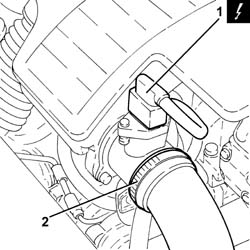
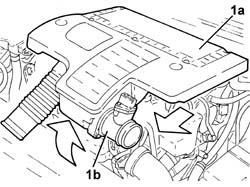
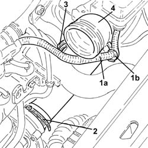

1048A50 air inlet pipe to turbo charger - r + r
- Path
- Procedures > 10 ENGINE UNIT > 1048 ENGINE AIR SUPPLY CIRCUIT > 1048A vacuum air circuit > 1048A50 air inlet pipe to turbo charger - r + r
- Kind
- repair procedure (removal / refitting; the operation number is the code)
- Applies to
- engines: 1.3 JTD 16v; all production periods
- Interactive page
- https://sloeber94.github.io/elrnDB-fPnd/en/#/2752585
Applies to: engines: 1.3 JTD 16v; all production periods
 Removing
Removing
 Refitting
Refitting5530B52 Battery DRIP TRAY/SUPPORT - R.R. .
1. Disconnect the electrical connection from the air flow meter.
 | Name | Connector |
|---|---|---|
1 | Air flow meter | K41 |
2. Loosen the band and disconnect the the turbocharger air inlet sleeve from the rigid pipe, air flow meter side.

Applies to: engines: 1.3 JTD 16v; all production periods
1. Remove the air filter (1a) complete with air flow meter (1b) by releasing it first from the lower pins and then from the rear fastening.

Applies to: engines: 1.3 JTD 16v; all production periods
1. Release the electrical wiring (1a) from the band (1b).
2. Loosen the band fastening the air intake hose to the turbocharger, turbocharger side.
3. Loosen the band fastening oil vapour hose between the rigid pipe and the turbo inlet hose, turbo inlet hose side.
4. Disconnect and remove the turbocharger inlet hose.

Applies to: engines: 1.3 JTD 16v; all production periods
Refitting
RemovingFit the turbocharger air inlet hose in place and connect it.
Tighten the band fastening the oil vapour hose between the rigid pipe and the turbo inlet hose, turbo inlet hose side.
Tighten the band fastening the turbocharger air inlet hose, turbocharger side.
Secure the electrical wiring to the band.
Replace the air filter, complete with air flow meter, in its housing.
Connect the air intake sleeve to the turbocharger, air flow meter side, and tighten the band.
Connect the electrical connection to the air flow meter.
| Name | Connector |
|---|---|---|
- | Air flow meter | K41 |